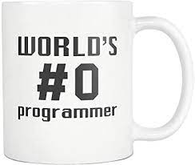
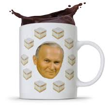
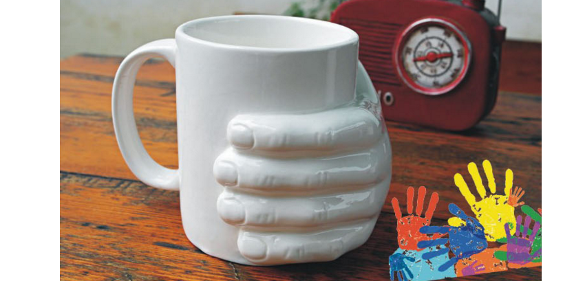

kubek ma na sobie napis "World's #0 programmer".
a nie tak jak ludize od jedynki.
Na kubku widnieje wizerunek Jana Pawła II otoczonego kremówkami.
Powód jest bardzo prosty, Jan Paweł II za życia uwielbiał kremówki.

Kubek z wyrzeźbioną ręką.
Oto moja lista czterech kubków.
| Opis | Recenzja | Obrazek |
|---|---|---|
| "Programista #0" kubek ma na sobie napis "World's #0 programmer". |
Dlaczego #0 a nie #1? Tak jest, ponieważ komputery zaczynają liczyć od ZERA, a nie tak jak ludize od jedynki. |
 |
| "Kremówkuj z tym" Na kubku widnieje wizerunek Jana Pawła II otoczonego kremówkami. |
Dlaczego były papież jest otoczony kremówkami? Powód jest bardzo prosty, Jan Paweł II za życia uwielbiał kremówki. |
 |
| kubek... | Ja się nie będe wysilał, to nie ja wybierałem kubki. | |
| "Hand shaped cup" Kubek z wyrzeźbioną ręką. |
Prawie zwykły biały kubek, moim zdaniem bardzo poręczny. |  |